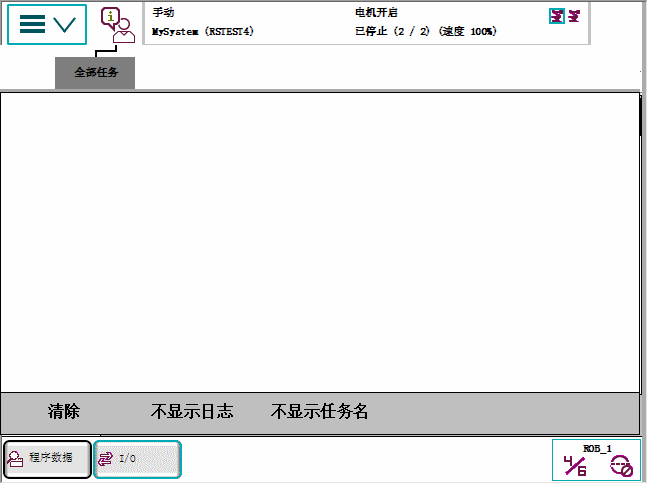

操作员窗口显示来自程序的信息。 装有 Multitasking 后，所有任务信息均显示于同一操作员窗口。 如果有消息要求执行动作，就会显示该任务的独立窗口。
点击状态栏中 ABB 标识右侧图标，即可打开操作员窗口。以下图示显示了操作员窗口的一个例子：

Clear（清除）
清除所有消息
Don’t Show Logs（不显示日志）
Don’t Show Task Name（不显示任务名）
隐藏任务名